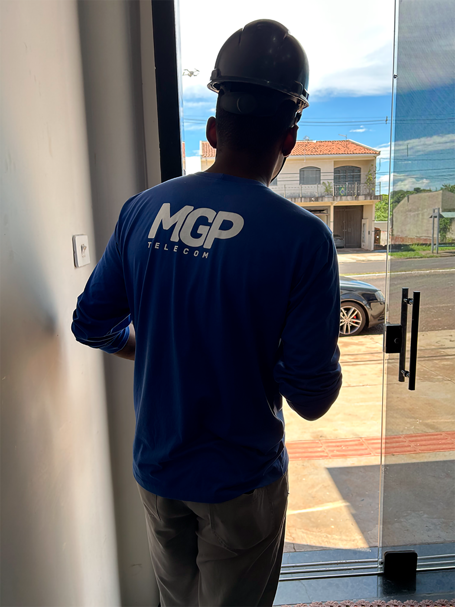

<section class="all-quemsomos p-4">
    <div class="container">
        <div class="row top-quemsomos mb-3">
            <div class="col-12 p-4 top-quemsomos">
                <h2>Quem somos<i class="fa-regular fa-circle-question pl-2"></i></h2>
            </div>
        </div>
        <div class="row bottom-quemsomos p-4">
            <div class="col-8">
                <h1>História & Objetivos</h1>
                <p>A MGP Telecom nasceu há mais de uma década em Maringá - Paraná, com o objetivo de fornecer acesso à internet para pessoas que ainda não tinham essa possibilidade. Desde então, a empresa se tornou referência no provimento de internet fibra óptica, sempre com um olhar atento à qualidade dos serviços prestados e ao atendimento diferenciado oferecido aos seus clientes.<br> Com investimentos contínuos em estrutura e monitoramento constante, a MGP Telecom busca manter uma relação de confiança com seus parceiros e clientes, proporcionando soluções personalizadas para cada necessidade. Além disso, o atendimento humanizado é uma das principais características da empresa, sempre focado em resolver e satisfazer os problemas e necessidades dos clientes.</p>
            </div>
            <div class="col-4">
                
            </div>
        </div>
    </div>
</section><!--QUEM SOMOS-->